販売中の商品
店頭に並んでいる家電・家具・インテリアの一部です。写真をタップすると詳しく見られます。ほしい商品の「カートに入れる」を押して、下の注文フォームからまとめて取り置き・配送のお申し込みができます。
商品一覧
お支払いは受け取り時（店頭または配送時）に、現金・クレジットカード・PayPay でお願いします。ネット決済は準備中です。
お取り置きは3日間（仮）です。価格は税込です。いくつでもカートに入れて、まとめて申し込めます。配送料は1回の注文で1回分で、注文フォームで郵便番号から目安が出ます（カートの商品がすべて送料無料なら50km以内は無料）（配送料の表）。

AQUA 冷蔵庫 355L（2024年）
¥65,000（税込）
中古・2024年・355L・4ドア・送料無料（50km以内）

ドラム式洗濯乾燥機（BIG DRUM）
¥45,000（税込）
中古・送料無料（50km以内）

炊飯器 5合炊き（新品・2024年）
¥8,200（税込）
新品・2024年・5合炊き
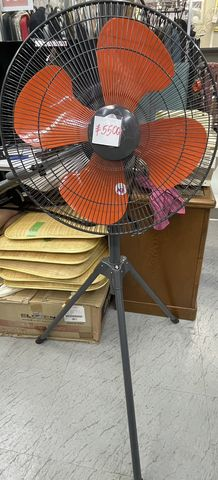
工業用扇風機（三脚スタンド）
¥5,500（税込）
中古
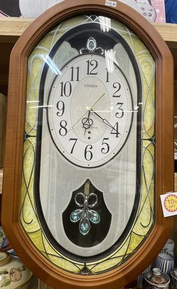
CITIZEN 電波掛け時計（振り子付き）
¥3,300¥2,970（10% OFF・税込）中古
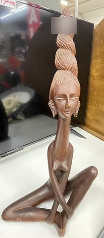
木彫りの女性像
¥5,650（税込）
中古
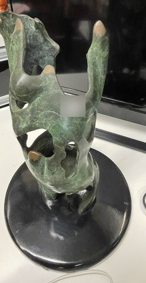
青銅風の花器・オブジェ
¥2,800（税込）
中古
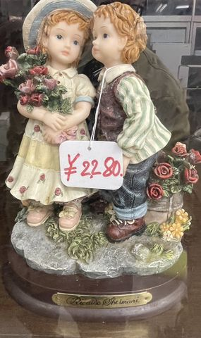
陶器の人形（花を持つ少女と少年）
¥2,280（税込）
中古
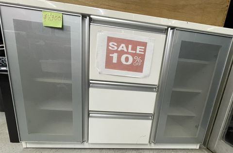
食器棚（白・ガラス扉・引き出し3段）
価格は確認中
中古
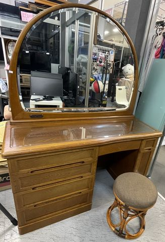
ドレッサー（鏡台・スツール付き）
価格は確認中
中古
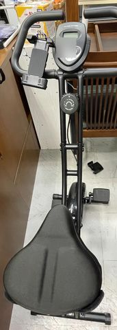
フィットネスバイク（折りたたみ）
価格は確認中
中古
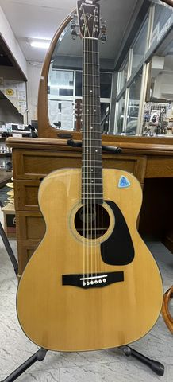
アコースティックギター（スタンド付き）
価格は確認中
中古
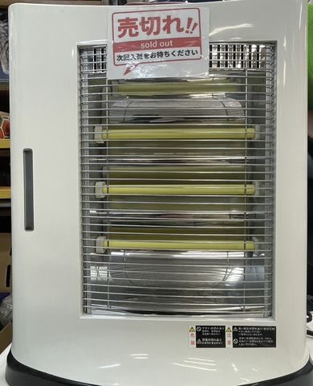
売切れ電気ストーブ
価格は確認中
中古
店頭でも
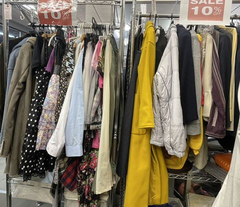
衣類も販売しています（店頭 10% OFF）
冬物のコートや婦人服など。店頭でご覧ください（このページからの注文は受けていません）。
注文フォーム
カートに入れた商品を確かめて、受け取り方法（店頭／配送）をお選びください。配送の場合は郵便番号で配送料の目安を出します（配送料は何点でも1回分）。送信のあと、こちらから連絡して受け取りの日時を決めます。
フォームを読み込んでいます…